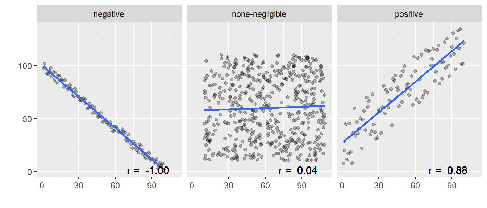
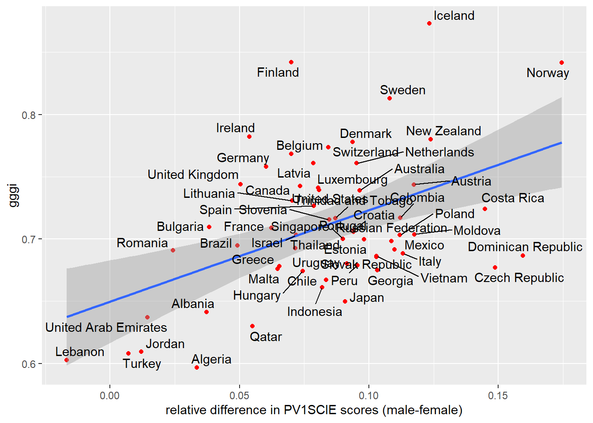

10 Correlation and regression
In this session we will be exploring the use of linear regression to describe data and predict results. We will be looking for patterns within the PISA data sets, as well we trying to recreate some of the controversial findings from Stoet and Geary (2018) by linking PISA_2018 data to global gender equality indices using the left_join function.
There are two types of statistics that we can create:
Descriptive statistics describe/summarise a data set. E.g. what’s the average height of a woman, how many people called George were born in Somerset each year since 1921?
Inferential statistics estimate something from a set of data, make generalisations about larger populations. E.g. If I know the height of a woman, can I predict her shoe size? If I meet someone called George, what is the likelihood that they were born in Somerset?
The first few sessions of this course taught you how to use R to perform descriptive statistics, with you finding the mean, max, min etc of data. Following sessions have given you a range of inferential tools, for example chi-square, t-tests and ANOVA. This session will introduce you to linear regression a means by which you can predict the value of a variable based on the value of another variable. Before we can start using linear regression we will introduce you to correlation, another type of inferential statistics.
1 Correlation
Correlation gives the direction and strength of the relationship between two numeric variables. For example we might see a relationship between the reading level of a student and their maths results in the UK: the better a student is at reading, typically, the higher their maths grade. Correlation allows us to describe this relation statistically:
The graph above shows that there is a correlation between Maths score and Reading score. This relationship is a positive one, i.e. as the reading level of an individual increases the maths grade is also likely to increase. The strength, correlation coefficient (Pearson's r) of the relationship between these two numeric fields is 0.7812. The correlation coefficient runs from -1 to +1.
- If the correlation coefficient (r) is negative, i.e. as one factor increase the other declines, the slope of the line of best-fit will be negative. E.g “The more time you spend running on a treadmill, the more calories you will burn”
- If the correlation coefficient (r) is positive, i.e. as one factor increase the other increases, the slope of the line of best-fit will be positive. E.g. “As the temperature decreases, more heaters are purchased.”
- If the correlation coefficient (r) is 0, i.e one factor increasing doesn’t impact the other factor, the slope of the line of best-fit will be flat. E.g. “the number of trees in a city has no relation to the number of chocolate bars purchased by children”

To run the correlation test in R we use the cor.test function:
cor.test(<vector1>, <vector2>, method = "pearson")
For our data we will be using the PV1MATH and PV1READ columns.
Pearson's product-moment correlation
data: corr_data$PV1MATH and corr_data$PV1READ
t = 147.09, df = 13816, p-value < 2.2e-16
alternative hypothesis: true correlation is not equal to 0
95 percent confidence interval:
0.7746249 0.7876230
sample estimates:
cor
0.7812086 -
dfthe number of ways that the data can vary, the larger this number the more ways the data could have been different -
p-valuesignificance of the result, can we dismiss the null-hypothesis that there isn’t a relationship between maths score and wealth as the p-value is less than0.05 -
sample estimatesthe strength of the relationship between the factors -
confidence intervalsthe upper and lower limit of where the correlation coefficient is likely to lie, with 95% confidence.
Note
Degrees of freedom (df)
Two individuals from different countries might have a weight difference of 5 KG. So what?! But if average weights between whole populations of countries vary by 5 KG then this becomes much more interesting.
Roughly: Number of independent values that can vary without questioning the significance of the model. So the more df you have, the safer your model. Degrees of freedom can be calculated by looking at the number of values that can vary, often this is the number of observations that you have minus one – if you had just one element it wouldn’t be able to vary against anything else:
df = n - 1
1.1 Other correlation-coefficients
When looking for correlations in data that is non-parametric, i.e. not normally distributed you could use Spearman’s rank order correlation-coefficient (rho ρ) rather than Pearson’s r. cor.test(... method = "...") allows you to specify the method used for correlation, you can set this to Spearman’s rho by writing method = "spearman"
Data will need to contain continuous or ordinal variables. The Spearman correlation coefficient is based on the ranked values for each variable rather than the raw data. The Spearman correlation between two variables is equal to the Pearson correlation between the rank values of those two variables.
We want to look at the correlation between attitudes towards the learning activities in schools (ATTLNACT) and wealth (WEALTH) for females from the UK with fathers who are Cooks.
Graphing this data, it is unclear if it is normalised:

We can run the Shapiro-Wilk Test to check for the the normality of the data, any alpha value greater than 0.05 means we can assume that the data is normally distributed.
Shapiro-Wilk normality test
data: sub_data$ATTLNACT
W = 0.84971, p-value = 0.003354In this case the data isn’t normally distributed as p < 0.05 and we need to use a non-parametric correlation test. We need to run Spearman rather than Pearson:
Spearman's rank correlation rho
data: sub_data$WEALTH and sub_data$ATTLNACT
S = 1369, p-value = 0.3097
alternative hypothesis: true rho is not equal to 0
sample estimates:
rho
0.2269763 The result shows no significant correlation (p=0.31) between wealth and attitude to school for this group of students
Important
the central limit theorem means that when you have a sufficiently large sample you can presume that the data is normally distributed. As a rule of thumb “30 is the magic number”, and any samples you are studying with 30 or more data items can be treated as parametric, e.g. you would always use pearson when running correlation analysis on 30 or more items.
When dealing with non-parametric and small data sets you can also use Kendall’s Tau i.e. cor.test(... method = "kendall")
1.2 Reporting correlations
To interpret the correlation co-efficient of a model we can use the following table:
| Correlation co-efficient | Relationship |
|---|---|
| .70 or higher | very strong positive |
| .40 to .69 | strong positive |
| .30 to .39 | moderate positive |
| .20 to .29 | weak positive |
| .01 to .19 | negligible or none |
| 0 | no relationship |
| -.01 to -.19 | negligible or none |
| -.20 to -.29 | weak negative |
| -.30 to -.39 | moderate negative |
| -.40 to -.69 | strong negative |
| -.70 or higher | very strong negative |
When writing a report we might present our findings like this:
There was no significant relationship between the perceived quality of sleep and its impact on Mood, r = -.12, p = .17
or
There is a significant very strong correlation between overall well-being and life satisfaction, r = .86, p = .00
1.3 Questions
Use cor.test to explore the following relationships:
-
PV1MATHtoPV1SCIE, is this a stronger relationship than that between Maths and Reading?
- The wealth
WEALTHof femalesST004D01Tand their ReadingPV1READscore, how does this compare to males? Why might they be different?
- For the
United KingdomHow does the sense of belonging to schoolBELONGcorrelate with the attitude to learning activitiesATTLNACT? How does the UK compare against other countries?
Tip
If you want to find all the numeric fields, i.e. the fields that you can easily run correlation calculations on, use the following code to list them:
[1] "WVARSTRR" "ESCS" "LMINS" "CNTSCHID" "CNTSTUID"
[6] "ST060Q01NA" "MMINS" "SMINS" "TMINS" "CULTPOSS"
[11] "WEALTH" "PV1MATH" "PV1READ" "PV1SCIE" "ATTLNACT"
[16] "BELONG" "DISCLIMA" 2 Regression
Correlation allows us to see the strength of the relationship but it doesn’t allow us to predict what would happen if a variable changed. “When the wind blows, the trees move. When the trees move, the wind blows.” Which is it? Correlation suggests there is a link but tells us nothing about causation. To do this we need regression.
| Correlation | Regression |
|---|---|
| an example of inferential statistics | an example of inferential statistics |
| give direction and strength of the relationship between two (or more) numeric variables | give direction and strength of the relationship between two (or more) variables |
| Relationship between variables | The extent to which one variable predicts another |
| Effect only (no cause) | Cause and effect |
| p(x,y) == p(y,x) | One way (e.g. education affects income differently from how income affects education) |
| Single point/value | An equation that creates a best fitting line |
Regression is a way of predicting the value of one dependent variable from one or more independent variables by creating a hypothetical model of the relationship between them.
- independent variable - the cause of the change that is independent of other variables
- dependent variable - the effect of the cause
2.1 Linear models and regression
The model used is a linear one, therefore, we describe the relationship using the equation of a straight line. In linear regression, with one dependent and one independent variable, we use the Method of Least Squares to find the line of best fit. The means finding a straight line that passes as close as possible to all the points. The distance between a point and this line is called a residual. The line of best fit is the line where the sum of the residuals squared is the smallest number possible.

The line that is created can be described by the equation:
Output = Intercept + Coefficient * Input
Let’s use linear regression to explore the relationship between the score in maths(PV1MATH) and the score in reading (PV1READ). To build this model we use the lm command:
lm(<dependent_var> ~ <independent_var> , data=<dataframe>)
The first part defines the model we are going to explore, listing the dependent variable and separating it from the independent variable[s] with a tilde ~. You can specify multiple independent variables by adding more plusses, but for the example here we are only going to use one. Once the model has been built we can feed it into the summary(<mdl>) command to output the results:
Call:
lm(formula = PV1MATH ~ PV1READ, data = PISA_2018)
Residuals:
Min 1Q Median 3Q Max
-289.48 -39.35 -0.79 38.68 341.71
Coefficients:
Estimate Std. Error t value Pr(>|t|)
(Intercept) 9.617e+01 3.254e-01 295.5 <2e-16 ***
PV1READ 8.003e-01 6.942e-04 1152.9 <2e-16 ***
---
Signif. codes: 0 '***' 0.001 '**' 0.01 '*' 0.05 '.' 0.1 ' ' 1
Residual standard error: 58.42 on 606625 degrees of freedom
(5377 observations deleted due to missingness)
Multiple R-squared: 0.6866, Adjusted R-squared: 0.6866
F-statistic: 1.329e+06 on 1 and 606625 DF, p-value: < 2.2e-16If you look at the Coefficents: table we can see that PV1READ is significant in explaining the outcome of the model as the p-value Pr(>|t|) is less than 0.001 <2e-16 ***. The null hypothesis is that one variable does not predict another, we can dismiss this. By looking at the Estimate we can also see by how much a PV1MATH grade would increase if the PV1READ increased by one: 0.8003. Additionally, we have R2 value of 0.6866, this suggests that the model is very good at explaining the value of the dependent variable, 68.7% of the variance in the PV1MATH grade is explained by the PV1READ grade.
2.2 R squared
With large data sets you will often find a statistically significant difference, but p-values should be read with caution as the larger the data set you use the more likely you are to get a low p-value. The actual magnitude of a significant difference might be very small. r-squared and adjusted r-squared are ways for you to report on the magnitude of a significant difference and when you report the findings from a linear model you should be looking at the p and the R^2^ values. You have already met R, this is the correlation coefficient from earlier, R2 is this value squared:
- R - The correlation between the observed values of the outcome, and the values predicted by the model.
- R2 - The proportion of variance in the dependent variable accounted for by the model.
- Adj. R2 - An estimate of R2 in the population (shrinkage), often very similar to plain R2.
Imagine we take two experiments a) and b)

Both have statistically significant results, but it’s clear that the impact of the intervention in graph a) is larger as there is less overlap between the curves, i.e. there is more difference between the the outcomes.
if the difference were as in graph (a) it would be very significant; in graph (b), on the other hand, the difference might hardly be noticeable (Coe 2002, p2)
Different effect sizes have different meanings and there is some debate on how to interpret them, with different interpretations for different fields of research (Schäfer and Schwarz 2019)
| Effect size value | Effect size |
|---|---|
| 0.0 to 0.19 | negligible |
| 0.2 to 0.49 | small |
| 0.5 to 0.79 | medium |
| 0.8+ | large |
You might be familiar with the Education Endowment Foundation’s Teaching and Learning Toolkit which outlines the Impact of different interventions on student learning. For example, repeating a year is seen to decrease student progress by 3 months and providing students with feedback is seen to increase student progress by 6 months. Behind the scenes they are using effect-sizes to predict the impact of educational interventions. In their model an effect-size of 0.1 is considered to have “Low impact”, but also an effect size of this magnitude is translated to 2 months progress in the Toolkit (Higgins et al. 2016, 5).
2.3 Questions
Is it reasonable to presume that using 5 interventions from the education endowment foundation toolkit, each with effect-sizes of 0.1, i.e. 2 months improvement, will increase the progress for the average student in your class by 10 months (5 * 2)?
Run a regression model to look at how science grades predict Maths outcomes in UK students. How does this compare to students in France?
- Create a linear model to look at how wealth
WEALTHinfluences Maths grades in the United Kingdom and Belarus. If we use the Education Endowment Foundation’s interpretation of effect sizes (Higgins et al. 2016, 5) what is the impact of increasing the wealth of students in each country?
3 Multiple linear regression
So far we have looked at the impact of a single independent variable on a single dependent variable. We are now going to look at building models that contain multiple independent variables, of both continuous and discrete values. For example, we might want to see how Gender (ST004D01T) and Reading score (PV1READ) help predict a maths score. To add extra independent variables, use the plus symbol +:
Call:
lm(formula = PV1MATH ~ PV1READ + gender, data = PISA_2018 %>%
rename(gender = ST004D01T))
Residuals:
Min 1Q Median 3Q Max
-289.42 -38.14 -0.68 37.51 356.24
Coefficients:
Estimate Std. Error t value Pr(>|t|)
(Intercept) 7.405e+01 3.368e-01 219.8 <2e-16 ***
PV1READ 8.180e-01 6.808e-04 1201.6 <2e-16 ***
genderMale 2.798e+01 1.471e-01 190.2 <2e-16 ***
---
Signif. codes: 0 '***' 0.001 '**' 0.01 '*' 0.05 '.' 0.1 ' ' 1
Residual standard error: 56.75 on 606622 degrees of freedom
(5379 observations deleted due to missingness)
Multiple R-squared: 0.7043, Adjusted R-squared: 0.7043
F-statistic: 7.223e+05 on 2 and 606622 DF, p-value: < 2.2e-16Both independent variables are significant (p<0.001), and the R2 of the model is high at 0.7043, this model explains 70% of the variance in Maths grade. Looking at the Estimates, we see both independent variables presented, this means we can read them as if the other factor has been controlled for; e.g. what is the impact of reading score if the impact of gender has been taken into consideration. PV1READ is 0.818, meaning for an increase of 1 in this score, the PV1MATH grade would increase by 0.818. Gender is different, this is a nominal field, being either Male or Female, and genderMale is shown in the coefficients table. This means that the model has taken gender == Female as the base state, and modeled what happens if the gender were to change to Male. Interestingly, it suggests that when controlling for the reading grade, e.g. comparing females and males of the same reading score, males would do 27.98 points better in their PV1MATH grade than females(!). We’ll be exploring these gender differences a little further in section Chapter 7.
4 Reporting regression
When reporting linear regression we should make note of the estimate (also known as beta β-value) of each factor along with their p-values. We need to know the R2 and p-value for the model as well as the F-statistic and the degrees of freedom. We can then construct a few sentences to explain our findings (Zach 2021):
Simple linear regression was used to test if [predictor variable] significantly predicted [response variable]. The overall regression was statistically significant (R2 = [R2 value], F(df regression, df residual) = [F-value], p = [p-value]). It was found that [predictor variable] significantly predicted [response variable] (β = [β-value], p = [p-value]).
For the example above, this would be:
Simple linear regression was used to test if a student reading grade significantly predicted student maths grade. The overall regression was statistically significant (R2 = 0.6866, F(1,606625) = 1329000, p = <0.001). It was found that reading grade significantly predicted maths grade (β = 0.8003, p = <0.001).
Alternatively, you could make use of the easystats package which will do most of the heavy lifting for you:
Call:
lm(formula = PV1MATH ~ PV1READ, data = PISA_2018)
Residuals:
Min 1Q Median 3Q Max
-289.48 -39.35 -0.79 38.68 341.71
Coefficients:
Estimate Std. Error t value Pr(>|t|)
(Intercept) 9.617e+01 3.254e-01 295.5 <2e-16 ***
PV1READ 8.003e-01 6.942e-04 1152.9 <2e-16 ***
---
Signif. codes: 0 '***' 0.001 '**' 0.01 '*' 0.05 '.' 0.1 ' ' 1
Residual standard error: 58.42 on 606625 degrees of freedom
(5377 observations deleted due to missingness)
Multiple R-squared: 0.6866, Adjusted R-squared: 0.6866
F-statistic: 1.329e+06 on 1 and 606625 DF, p-value: < 2.2e-16We fitted a linear model (estimated using OLS) to predict PV1MATH with PV1READ
(formula: PV1MATH ~ PV1READ). The model explains a statistically significant
and substantial proportion of variance (R2 = 0.69, F(1, 606625) = 1.33e+06, p <
.001, adj. R2 = 0.69). The model's intercept, corresponding to PV1READ = 0, is
at 96.17 (95% CI [95.53, 96.80], t(606625) = 295.53, p < .001). Within this
model:
- The effect of PV1READ is statistically significant and positive (beta = 0.80,
95% CI [0.80, 0.80], t(606625) = 1152.88, p < .001; Std. beta = 0.83, 95% CI
[0.83, 0.83])
Standardized parameters were obtained by fitting the model on a standardized
version of the dataset. 95% Confidence Intervals (CIs) and p-values were
computed using a Wald t-distribution approximation.5 Questions
- What errors can you see in this code:
- PV1MATH given PV1READ and PV1SCIE
6 Standardising results with z-values
When we are trying to compare data between countries, our results can be heavily skewed by the overall performance of a country. For example, imagine we have country A and country U. Students in country A generally get high grades with a very high standard deviation, whilst students in country U generally get very low grades with a very low standard deviation.
# A tibble: 2 × 6
country M_max F_max difference sd mean
<chr> <dbl> <dbl> <dbl> <dbl> <dbl>
1 A 95 89 6 6.90 92
2 U 9 11 -2 1.41 10If we look for the difference in grades between females and males in country A we might see a massive difference, whilst female and male students in country U have a much smaller difference. We might then conclude that country U is more equitable. But in reality, because the standard deviation in country U is so small, the relative difference between females and males is actually larger than that seen in country A! To get around this problem, when dealing with situations like this, we can use standardised, or z, values. These z-values would be a student’s grade in relation to the standard deviation of all of that country’s grades.
To calculate the standardised z-value for each entry, we use:
(entry - mean of grouping) / sd of grouping
For example, for the first Male student in country A who scored 100 points, we would calculate
(100 - 92) / 6.899 = 1.16
This shows that this student got 1.16 standard deviations more than the mean of the population. For the first female in country U, we would calculate:
(12 - 10) / 1.141 = 1.75
These two values are then directly comparable, the first males in country A is relatively closer to the mean grade of country A, than the first female in country U. How does this work out for the whole country? Going back to whether sex had a greater impact on results in country A or country U we can calculate the z-values for each student by using the scale() command:
# A tibble: 12 × 4
# Groups: country [2]
sex country grade zgrade[,1]
<chr> <chr> <dbl> <dbl>
1 M A 100 1.16
2 M A 87 -0.725
3 M A 98 0.870
4 F A 95 0.435
5 F A 82 -1.45
6 F A 90 -0.290
7 M U 10 0
8 M U 8 -1.41
9 M U 9 -0.707
10 F U 12 1.41
11 F U 10 0
12 F U 11 0.707We can then group by country and by sex and see how the mean z-value varies
# A tibble: 4 × 3
# Groups: country [2]
country sex mean_zgrade
<chr> <chr> <dbl>
1 A F -0.435
2 A M 0.435
3 U F 0.707
4 U M -0.707We can clearly see that the grades in country A are relatively closer to the mean of country A, than the grades in country U, meaning that there is less variation in country A.
7 Recreating Stoet and Geary’s paper
Stoet and Geary’s 2018 paper: “The Gender-Equality Paradox in Science, Technology, Engineering, and Mathematics Education” presented controversial findings, including how the increased female uptake of STEM degrees in country could be partially explained (using regression) by the decreased gender equality in that country. We are going to explore part of this paper by looking at another finding (figure 3a) that looked at girls’ achievement in the PISA_2015 science test compared to their maths and reading grades. Comparing this relative grade to boys in the same country, it showed that as gender equality of their country increased, the gap got bigger, i.e. the more gender equal a country, the worse the female relative performance in science.
The gender gap in intraindividual science scores (a) was larger in more gender-equal countries (rs = .42)
7.1 Loading data sets
To perform more complex analysis you will often want to join different data sets together. Stoet and Geary (2018) explore gender differences in outcomes with gender equality in countries (see their figures 3 and 4), by using the PISA_2015 data set with the science efficacy SCIEEFF, and science performance (maybe PV1SCIE, or a aggregation of PV1, PV2 etc ) fields; mapping this data set to the 2015 Global Gender Gap Index (GGGI). Let’s try and recreate what they did.
First we are going to download the GGGI, unfortunately, it’s difficult to find the 2015 data set, so we’ll use 2013 instead, which can be found here
The data is in a .csv format so we need to use read.csv to get it into R (make sure that you use read.csv rather than read_csv as the names will come out slightly differently)
If we look at the names of the GGGI fields we find that there is a Country column and the Overall.Score column, these are the columns that we are interested in. We can also see that many of the top scoring countries, i.e. those with better gender equality are Nordic countries.
Country Overall.Score
1 Iceland 0.8731
2 Finland 0.8421
3 Norway 0.8417
4 Sweden 0.8129
5 Philippines 0.7832Now we will load the 2015 PISA data set, we have a .parquet copy for you here
7.2 Linking data using left_join
To link the GGGI to the PISA_2015 data set we will use the left_join function from the tidyverse. This takes a few parameters
left_join(<table_1>, <table_2>, by=<matching_field[s]>)We will now join a subset of the PISA_2015 data set to a subset of the GGGI scores:
- line 1, assigns
<-the result of theleft_jointo a new object,PISA_2015_GGGI, - line 2, specifies
<table_1>to bePISA_2015with the selected fields, note we have chosen to usePV1grades here, it’s unclear what the original paper uses (See ?@sec-PV for a discussion on the use ofPVgrades) - line 3, specifies
<table_2>to beGGGIwith just the country andOverall.Scorefields - line 4, specifies the
<matching_field>to beCNTfromPISA_2015andCountryfromGGGI, this means that the data in<table_2>will be added to<table_1>whereCNTandCountryare the same. For example for every entry ofFinlandinPISA_2015, theOverall.Scoreof0.8421will be added. Where it can’t find a matching country, e.g. Albania doesn’t have a GGGI entry,NAwill be added.
You can see the new data set has attached the Overall.Score field from GGGI to the selected fields from PISA_2015:
# A tibble: 3 × 7
CNT ST004D01T PV1MATH PV1SCIE PV1READ SCIEEFF Overall.Score
<chr> <fct> <dbl> <dbl> <dbl> <dbl> <dbl>
1 Albania Female 463. 517. 430. NA 0.641
2 Albania Female 430. 480. 463. NA 0.641
3 Albania Female 303. 447. 503. NA 0.641
Tip
There are multiple types of join in the tidyverse, you can find out more about them here

7.3 Standardising PISA results
Next, we will try to wrangle the data into shape to recreate figure 3 from Stoet and Geary (2018). To do this we first need to standardise the grades for maths, science and reading so we can compare the results of students between countries without low performing or high performing countries skewing the results (see Chapter 6 for details on how to standardise data). Following the steps outlined on page 7:
- We standardized the mathematics, science, and reading scores on a nation-by-nation basis. We call these new standardized scores zMath, zRead, and zScience.
- We calculated for each student the standardized average score of the new z-scores and we call this zGeneral.
- Then, we calculated for each student their intra-individual strengths by subtracting zGeneral as follows: relativeSciencestrength = zScience - zGeneral, relativeMathstrength = zMath - zGeneral, relativeReadingstrength = zReading - zGeneral.
- Finally, using these new intra-individual (relative) scores, we calculated for each country the averages for boys and girls and subtracted those to calculate the gender gaps in relative academic strengths
produces the following code:
Finally we will plot the results:

The graph is pretty good recreation of what the paper presented, with the general shape the same; differences in grades for each country might be explained by the original paper using 5 plausible values rather than just PV1SCIE, as we have used (Stoet and Geary 2020). Does the statistical model stand up to scrutiny? To find out we will use correlation. Stoet and Geary used Spearman’s rho, signified by the s in rs:
The most important and novel finding here is that the sex difference in intraindividual strength in science was higher and more favorable to boys in more gender-equal countries, rs = .42, 95% CI = [.19,.61], p < .001, n = 62 (Fig. 3a)
We can run our version of this model using the following:
Spearman's rank correlation rho
data: pisa_gggi_diff$gggi and pisa_gggi_diff$difference
S = 24384, p-value = 0.02763
alternative hypothesis: true rho is not equal to 0
sample estimates:
rho
0.2874342 Our model doesn’t show such a strong correlation. In fact, our model shows a “weak positive” relationship of just 0.287, albeit a significant one (p<0.05).
For our version of this model it seems unnecessary to use Spearman’s rho, the number of countries we are comparing with valid data is 59 (pisa_gggi_diff %>% na.omit() %>% nrow()), which is greater than 30 and using the central limit theorem we should be able to use Pearson’s r. Additionally,shapiro.teston both difference andgggi give non-significant results, suggesting Pearson is the better test to use here:
If we run the model again using Pearson’s r, we get:
Pearson's product-moment correlation
data: pisa_gggi_diff$gggi and pisa_gggi_diff$difference
t = 3.9972, df = 57, p-value = 0.0001863
alternative hypothesis: true correlation is not equal to 0
95 percent confidence interval:
0.2406661 0.6465242
sample estimates:
cor
0.4679109 A result much closer to the one published. The differences here might be the result of the different GGGI data set we used or a difference in the way we calculated difference, or something to do with the correlation model used. It would be good to know!
We can also explore this data using regression and a linear model looking at the relationship between difference in grades and the gggi value for each country:
Call:
lm(formula = difference ~ gggi, data = pisa_gggi_diff)
Residuals:
Min 1Q Median 3Q Max
-0.067343 -0.018964 -0.003605 0.023548 0.083991
Coefficients:
Estimate Std. Error t value Pr(>|t|)
(Intercept) -0.12926 0.05317 -2.431 0.018228 *
gggi 0.29826 0.07462 3.997 0.000186 ***
---
Signif. codes: 0 '***' 0.001 '**' 0.01 '*' 0.05 '.' 0.1 ' ' 1
Residual standard error: 0.03247 on 57 degrees of freedom
(14 observations deleted due to missingness)
Multiple R-squared: 0.2189, Adjusted R-squared: 0.2052
F-statistic: 15.98 on 1 and 57 DF, p-value: 0.0001863This model also finds a significant difference (p<0.001) and an estimate for gggi of 0.298, i.e. for each increase of 1 in gggi, males will do 0.298 of a standard deviation better than females. The R2 is pretty decent too at 0.219 suggesting the finding that Stoet and Geary reported is a sound one.
8 Seminar Tasks
Group discussion:
- What were the most important findings from Stoet and Geary’s paper?
- How trustworthy are the results?
- What do these results mean for gender equality in STEM?
- What are Spearman’s Rho and Pearson’s r? When might you use one rather than the other?
- Identify dependent and independent variables in the following scenarios and select the most appropriate statistical test (from all that you have learnt) for the analysis.
- The government is trying to understand which groups of people have been affected by a pandemic. They have data on healthcare professionals, education professionals and train drivers and the number of days taken off ill in the last 6 months.
- A cigarette company, working in a country that still allows cigarette advertising(!), wants to work out which groups in society are not currently smoking that many cigarettes. They want to find out if city dwellers are more likely to smoke than people living in the countryside.
- A netball team is trying to work out how likely their players are to get injured in a season. They have data on the number of injuries per player and the number of minutes each player has been playing netball.
- A country is trying to find out whether girls or boys are better behaved in schools. They have access to school databases that record the number of bad behaviour slips for each student.
- Interpret this correlation coefficient between the Index of economic, social and cultural status
ESCSand Family wealthWEALTH
Pearson's product-moment correlation
data: PISA_2018$ESCS and PISA_2018$WEALTH
t = 751.83, df = 595193, p-value < 2.2e-16
alternative hypothesis: true correlation is not equal to 0
95 percent confidence interval:
0.6966207 0.6992267
sample estimates:
cor
0.697926 - Interpret this linear model based on the FBI’s 2006 crime statistics. It explores the relationship between size of population (1,000s) and the number of murders (units)1:
| Estimate | Std. Error | t value | Pr(>|t|) | |
|---|---|---|---|---|
| (Intercept) | -0.726 | 0.089 | -8.191 | <2e-16 *** |
| Pop_thou | 0.103 | 0.001 | 145.932 | <2e-16 *** |
Adj R2 0.721
- Work out the correlation between a country’s mean female science grade and mean male science grade. Should you use Spearman’s Rho or Pearson’s r in your model? Why?
- Create a linear model to explore the relationship between the time spent in science lessons (
SMINS) and the grade in science (PV1SCIE)
Add the student maths score PV1MATH this model, how does this change the outcome?
- Load the school level data set for 2018 (file here) and explore the fields.
Using a linear model, how do “Shortage of educational staff” STAFFSHORT and “Shortage of educational material” EDUSHORT relate to “Student behaviour hindering learning” STUBEHA
Adjust the model to incorporate the percentage of boys in a school (see SC002Q01TA and SCHSIZE), what difference does this make?
How does the explanatory value of this model change if you only look at schools in the UK?
- Using
left_join(see Section 7.2), link each student record inPISA_2018to their school details (file here). You will need need toselecta subset of the school table to cover:CNT, CNTSCHID, SC016Q02TA, SC156Q03HA, SC156Q04HA, SC154Q01HA,SC154Q02WA, SC154Q05WA, SC154Q08WA, SC154Q09HA, STRATIO, CLSIZE,EDUSHORT, STAFFSHORT, STUBEHA
Using a linear model, find out how well the student teacher ratio STRATIO in a school predicts the mean maths achievement PV1MATH in that school. HINT: you need one row for each school, so use summarise with unique on STRATIO and mean on PV1MATH:
Adjust the linear model used above to incorporate STUBEHA “Student behaviour hindering learning” in addition to the student teacher ratio:
- Explore the schools data set to look at other interesting models. The school data set has a lot more numeric/continuous fields than the student table! To find these fields use this code:
In pairs discuss how you could use correlation and regression in your own research. Start building some models to explore the data sets.
Recreate the Stoet & Geary analysis (see Section 7.3) to see if there is a “gender gap in intraindividual mathematics scores” that is “larger in more gender-equal countries”. You might expect this to be the case as it exists for science. Is this a STEM wide finding? How does the science model look for 2018 data? Was it a one off finding?
References
Coe, Robert. 2002. “It’s the Effect Size, Stupid.” In British Educational Research Association Annual Conference, 12:14.
Cohen, Jacob. 1962. “The Statistical Power of Abnormal-Social Psychological Research: A Review.” The Journal of Abnormal and Social Psychology 65 (3): 145.
Higgins, Steve, Maria Katsipataki, AB Villanueva-Aguilera, Robbie Coleman, P Henderson, LE Major, R Coe, and Danielle Mason. 2016. “The Sutton Trust-Education Endowment Foundation Teaching and Learning Toolkit.” https://dro.dur.ac.uk/20987/1/20987.pdf.
Schäfer, Thomas, and Marcus A Schwarz. 2019. “The Meaningfulness of Effect Sizes in Psychological Research: Differences Between Sub-Disciplines and the Impact of Potential Biases.” Frontiers in Psychology 10: 813. https://www.frontiersin.org/articles/10.3389/fpsyg.2019.00813/full.
Stoet, Gijsbert, and David C Geary. 2018. “The Gender-Equality Paradox in Science, Technology, Engineering, and Mathematics Education.” Psychological Science 29 (4): 581–93. https://eprints.leedsbeckett.ac.uk/id/eprint/4753/6/symplectic-version.pdf.
———. 2020. “Corrigendum: The Gender-Equality Paradox in Science, Technology, Engineering, and Mathematics Education.” https://journals.sagepub.com/doi/10.1177/0956797619892892.
Zach. 2021. “The Complete Guide: How to Report Regression Results.” https://www.statology.org/how-to-report-regression-results/.
Footnotes
https://www.statisticssolutions.com/the-linear-regression-analysis-in-spss/:↩︎